Na marcenaria, mortalha é o rasgo aberto na madeira, e espiga é a peça que entra nele.
No tornozelo, a tíbia (o teto e o maléolo medial) e a fíbula (o maléolo lateral) formam a mortalha. O tálus é a espiga.
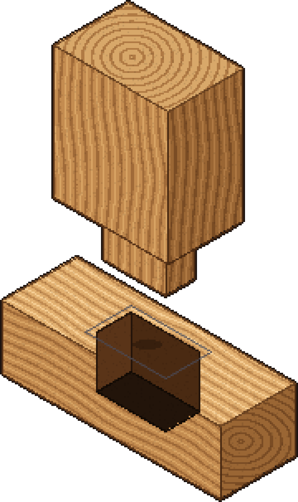
Para ver o encaixe inteiro, a radiografia de mortalha roda a perna 15° para dentro: a fíbula sai de trás da tíbia e o espaço em volta do tálus aparece todo.
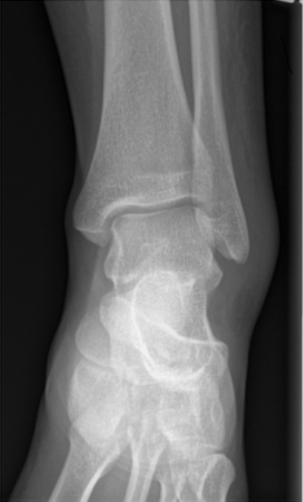
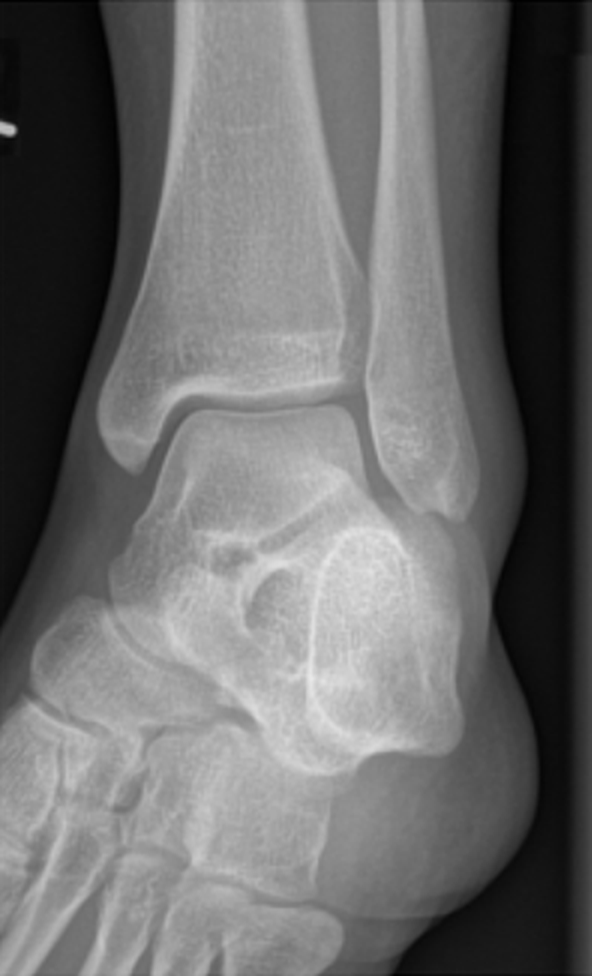
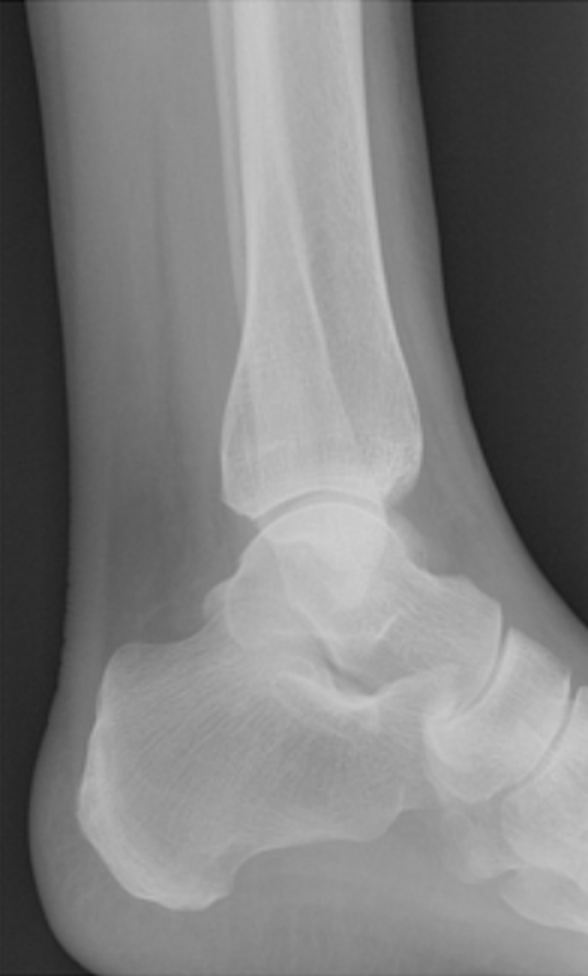
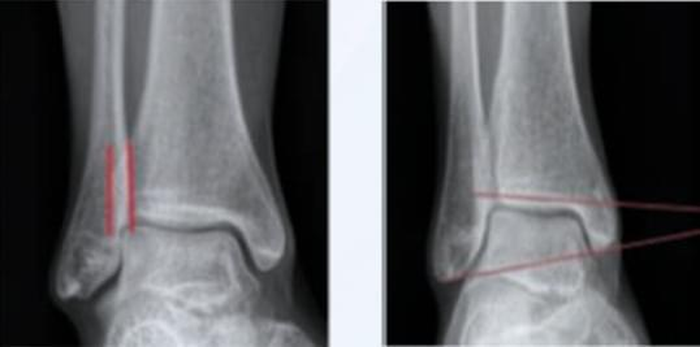
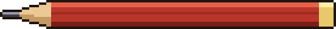
A sindesmose são os ligamentos que seguram a fíbula na tíbia, logo acima do encaixe. As duas medidas são feitas no AP, 1 cm acima da articulação.
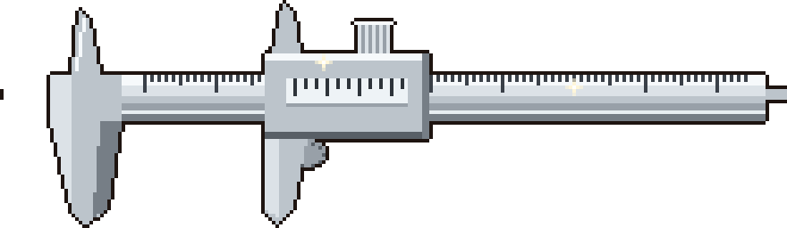
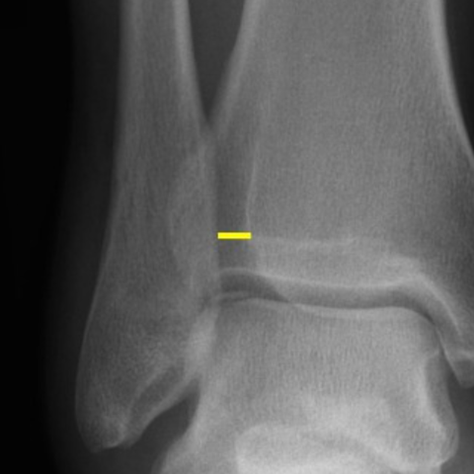
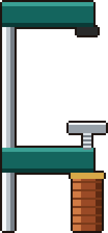
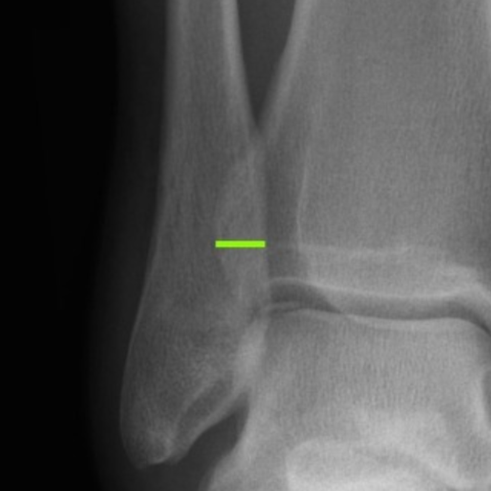
o vão escuro entre a fíbula e a tíbia. Lesão: acima de 5 mm. O mais confiável: muda pouco com a rotação.
quanto a fíbula fica atrás da tíbia. Lesão: menos de 5 mm no AP (ou de 1 mm na mortalha). Muda muito com a rotação.
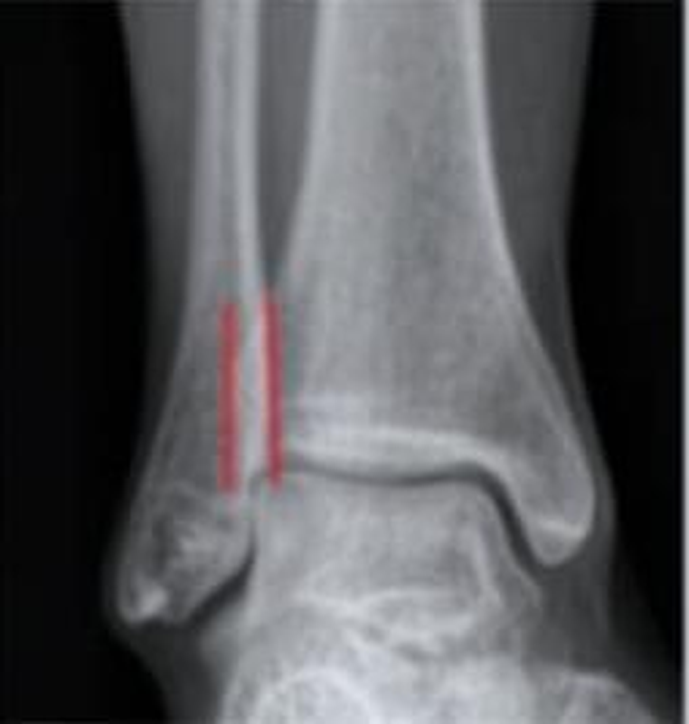
Na prova (imagem 1), as linhas vermelhas cercam o trecho em que os dois ossos se sobrepõem: é a sobreposição.
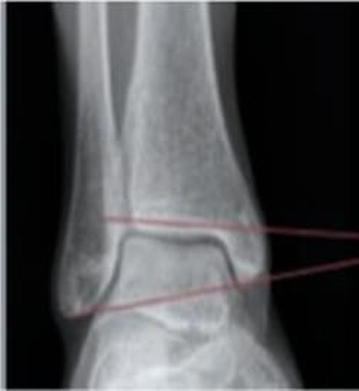
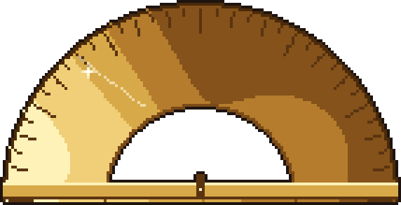
Normal: cerca de 83° e igual ao outro lado.
Se a fíbula fica curta (fratura que encurtou), o tálus vai para fora e em valgo.
Mesma conferência no sinal da bola: o contorno da fíbula segue o do tálus; quebrou, a fíbula está curta.
Sobreposição tibiofibular (imagem 1) e ângulo talocrural (imagem 2).
A e C chamam a imagem 1 de vão, mas ela marca ossos sobrepostos; C ainda troca o nome do ângulo. D: a borda de um maléolo, sozinha, não é uma medida.
É o vão entre o maléolo medial e o tálus. Normal: igual ao espaço de cima (entre o tálus e o teto) e menor que 5 mm.
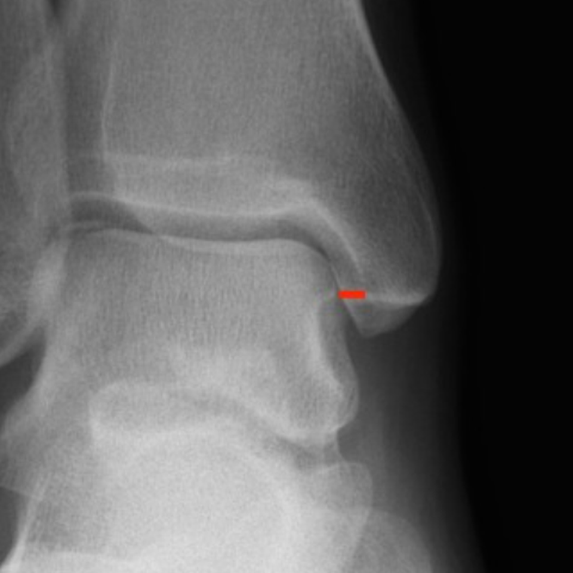
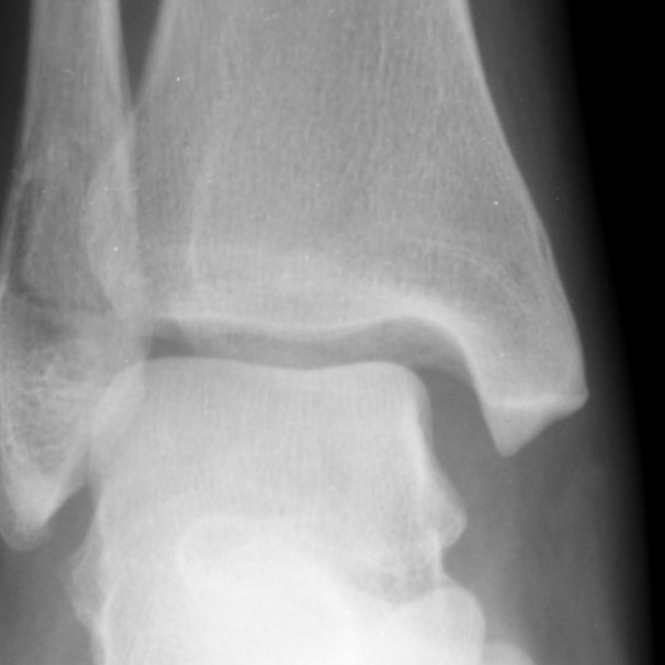
Na Weber B, espaço medial aberto quer dizer deltoide roto: a fratura é instável (SER IV). E basta 1 mm de tálus para fora para perder quase metade do contato (RAMSEY e HAMILTON).
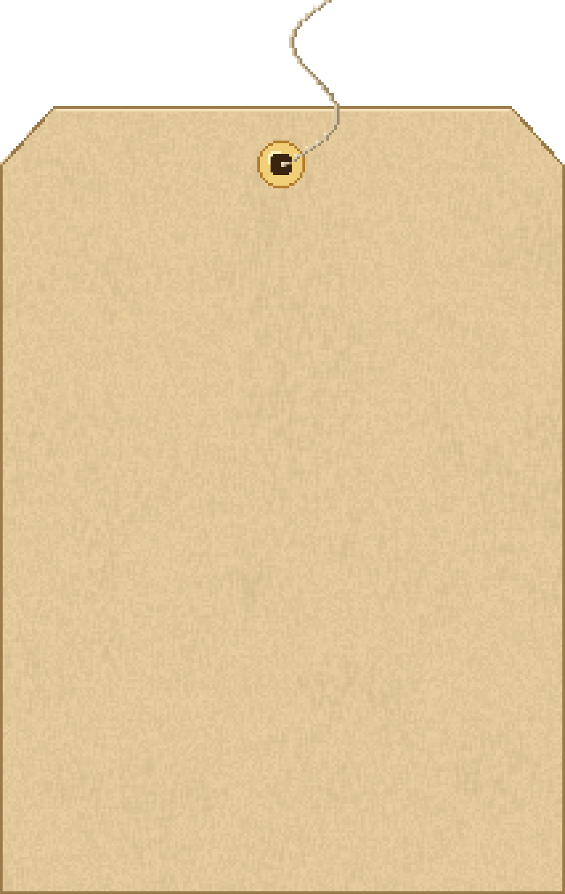
igual ao de cima e menor que 5 mm
até 5 mm, a 1 cm da articulação; o mais confiável
5 mm ou mais no AP; 1 mm ou mais na mortalha
cerca de 83° e igual ao outro lado
contínuo: a fíbula está no comprimento certo
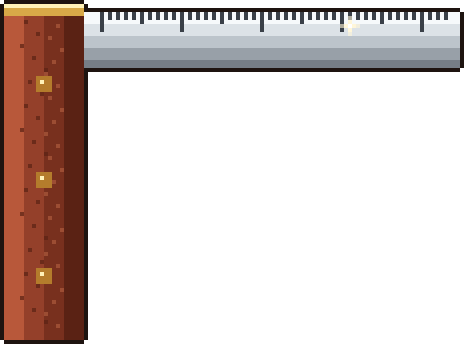
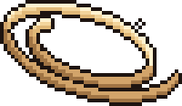